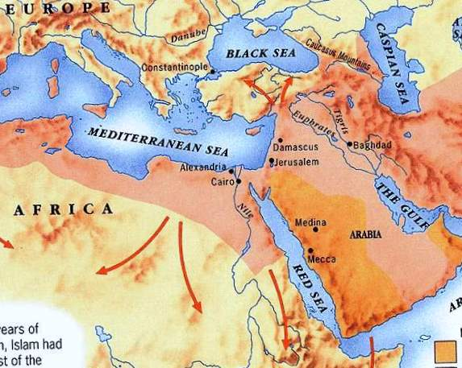
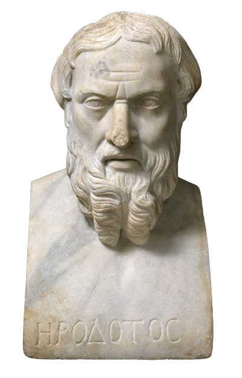
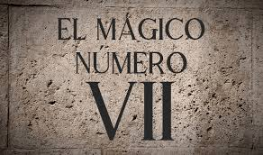
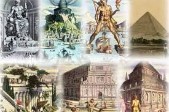

INSTITUTO TECNOLÓGICO DE TIJUANA
UNIDAD TOMAS AQUINO
Tijuana, B.C a 10 de septiembre de 2025
Carrera: ISC
Materia: Programación Web
Horario: 19-20 hrs
Laboratorio: D
Matrícula: 23211004
Alumno: Erick Corrales
Docente: José Jonathan Pérez Castro
Origen de las 7 maravillas del mundo antiguo
Las 7 maravillas del mundo antiguo no fueron construidas como una lista oficial desde el principio. El concepto surgió en la antigua Grecia, donde los viajeros escribían sobre las construcciones más impresionantes que habían visto. Para los griegos, la palabra "thaumata" significaba "cosas asombrosas" o "cosas dignas de ver".
La primera lista conocida fue realizada por Heródoto (484–425 a.C.) y más tarde perfeccionada por escritores como Filón de Bizancio (siglo III a.C.), quien escribió un libro titulado “Sobre las siete maravillas”. Gracias a estos relatos, se fue consolidando la lista que conocemos hoy.
Los griegos consideraban el número 7 como perfecto y sagrado, porque estaba asociado a los planetas conocidos en la época, las notas musicales y los días de la semana. Por eso eligieron siete maravillas, aunque había muchas más obras impresionantes.
Las maravillas elegidas tenían en común ser obras humanas que mostraban un dominio excepcional de la arquitectura, la escultura y la ingeniería. No eran las más útiles, sino las más asombrosas y hermosas según el criterio griego.
Con el paso de los siglos, muchos de los escritos originales se perdieron. Sin embargo, gracias a copias y crónicas romanas y medievales, la lista de las 7 maravillas se mantuvo viva y se convirtió en una referencia universal para hablar de logros humanos extraordinarios.